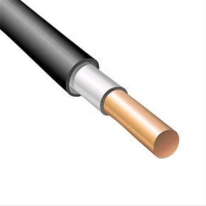

ВВГ 1х1,5
 Цена от: 20 рублей
Описание товара
Силовой медный кабель ВВГ применяют для стационарной установки в электрических
сетях с напряжением до 1000 Вольт и частотой 50 Герц. Кабелем ВВГ монтируют электрическую проводку без
ограничения разности уровней по трассе, при прокладке на открытом воздухе требуется дополнительная защита
от попадания прямых солнечных лучей (ПНД труба, кабельный лоток и др), так как ультрафиолет значительно
сокращает срок службы кабеля ВВГ, при прокладке в земле требуются дополнительные меры защиты от
механических повреждений оболочки. В зданиях и сооружениях прокладывать ВВГ запрещено по новым
требованиям пожарной безопасности.
Характеристики товара
Укладывать можно при температуре до -15°C. При более низких температурах необходимо подогрев кабеля, что
организовать непросто (оболочка становится слишком жесткой, ее очень сложно согнуть).
Температурный режим эксплуатации — от -50°C до +50°C. При этом, при наружной прокладке на улице необходима
дополнительная защита от ультрафиолета.
Изгибать можно с ограничениями:
ВВГ с одножильными проводниками минимальный радиус изгиба 10 радиусов;
с многожильными — 7,5 радиусов (за счет большей гибкости).
Допустимая температура нагрева проводников:
при КЗ при которой проводники сохраняют работоспособность зависит от производителя может составлять от
+160°C до +250°C.
при нормальной эксплуатации +70°C$
в режиме перегрузки +90°C.
Огнестойкость кабелей ВВГ не менее 180 мин.
Необходимо сказать, что технические характеристики кабеля ВВГ зависят не только от конкретного вида, но
и от производителя. Потому перед покупкой смотрите паспорт кабеля (можно попросить у продавца). Выше
приведены параметры, общие для всех марок кабеля ВВГ.
Не удивительно, что эти проводники очень популярны — при хороших технических показателях они стоят
относительно немного, использоваться могут практически везде — как на предприятиях и в офисах, так и в
домах и квартирах.
Применение товара
На сегодняшний день кабель ВВГнг является наилучшим вариантом по соотношению качества и цены. Этот провод
универсален не только с точки зрения конструкционных возможностей, но и для пожарной безопасности. Его
используют для монтажа сетей в следующих условиях:
на высоте, при отсутствии вероятности обрыва или повреждения во время дальнейшей эксплуатации;
в туннелях, шахтах и полушахтах, каналах, нишах, коллекторах, промышленных объектах, частично затапливаемых
зданиях;
по кабельным мостам и эстакадам;
в зданиях с высокой пожарной опасностью;
на объектах со следующими классами взрывоопасности В-11, В-11а, В-1б, В-1г.
Технические характеристики каждого типа кабеля ВВГ определены в ГОСТе 16442-80, однако иногда могут
отличаться от стандартных. Как правило, рабочее напряжение составляет не более 0,6 В, но провод может
использоваться и при больших параметрах, если это прямо указано в сертификате. Срок эксплуатации кабеля –
не менее 20 лет, однако требуется проводить проверку целостности изоляционной оболочки с периодичностью в
5 лет. При использовании в оптимальных условиях срок службы провода может составить до 30 лет.
Несмотря на то что кабель ВВГнг универсален, его все же чаще применяют в условиях повышенной опасности,
как электротехнической, так и пожарной.